Differential Geometry¶
Manifolds¶
Scalars, Vectors, Tensors¶
Differentiable manifold 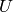 is a space covered by an atlas of maps, each map covers part of the manifold and is a one to one mapping to an euclidean space :
Let’s have a one-to-one transformation between and coordinates (we simply write , etc.):
Scalar  is such a field that transforms as ( is it’s value
in coordinates):
is such a field that transforms as ( is it’s value
in coordinates):
One form is such a field that transforms the same as the gradient of a scalar, that transforms as ( is it’s value in coordinates):
so
Vector is such a field that produces a scalar when contracted with a one form and this fact is used to deduce how it transforms:
so we have
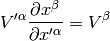
multiplying by and using the fact that we get
Higher tensors are build up and their transformation properties derived from the fact, that by contracting with either a vector or a form we get a lower rank tensor that we already know how it transforms.
Having now defined scalar, vector and tensor fields, one may then choose a basis at each point for each field, the only requirement being that the basis is not singular. For example for vectors, each point in has a basis , so a vector (field) has components with respect to this basis:
Covariant differentiation¶
The derivative of the basis vector is a vector, thus it can be written as a linear combination of the basis vectors:
Differentiating a vector is then easy:
So we define a covariant derivative:
and write
I.e. we have:

We also define:
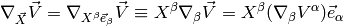
A scalar doesn’t depend on basis vectors, so its covariant derivative is just its partial derivative
Differentiating a one form is done using the fact, that is a scalar, thus
where we have defined
This is obviously a tensor, because the above equation has a tensor on the left hand side () and tensors on the right hand side ( and ). Similarly for the derivative of the tensor we use the fact that is a vector:
where we define
and so on for other tensors, for example:

One can now easily proof some common relations simply by rewriting it to components and back:

Change of variable:
Parallel transport¶
If the vectors at infinitesimally close points of the curve are parallel and of equal length, then is said to be parallel transported along the curve, i.e.:
So
In components (using the tangent vector ):
Fermi-Walker transport¶
In local inertial frame:
We require orthogonality  ,
in a general frame:
,
in a general frame:
where  was calculated by differentiating the orthogonality condition.
This is called a Thomas precession.
was calculated by differentiating the orthogonality condition.
This is called a Thomas precession.
For any vector, we define: the vector is Fermi-Walker tranported along the curve if:
If is perpendicular to , the second term is zero and the result is called a Fermi transport.
Why: the is transported by Fermi-Walker and also this is the equation for gyroscopes, so the natural, nonrotating tetrade is the one with , which is then correctly transported along any curve (not just geodesics).
Geodesics¶
Geodesics is a curve that locally looks like a line, i.e. it parallel transports its own tangent vector:
so
or equivalently (using the fact ):
Curvature¶
Curvature means that we take a vector , parallel transport it around a closed loop (which is just applying a commutator of the covariant derivatives 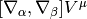), see how it changes and that’s the curvature:
That’s all there is to it. Expanding the left hand side:
we get
Lie derivative¶
Definition of the Lie derivative of any tensor  is:
is:
it can be shown directly from this definition, that the Lie derivative of a vector is the same as a Lie bracket:
and in components
Lie derivative of a scalar is
and of a one form is derived using the observation that is a scalar:

and so on for other tensors, for example:
Metric¶
In general, the Christoffel symbols are not symmetric and there is no metric that generates them. However, if the manifold is equipped with metrics, then the fundamental theorem of Riemannian geometry states that there is a unique Levi-Civita connection, for which the metric tensor is preserved by parallel transport:
We define the commutation coefficients of the basis by
In general these coefficients are not zero (as an example, take the units vectors in spherical or cylindrical coordinates), but for coordinate bases they are. It can be proven, that
and for coordinate bases , so
As a special case:
All last 3 expressions are used (but the last one is probably the most common).
 is the matrix of coefficients . At the beginning we used the
usual trick that is symmetric but is unsymmetric. Later we used
the identity , which follows from the well-known
identity by substituting and taking the
logarithm of both sides.
is the matrix of coefficients . At the beginning we used the
usual trick that is symmetric but is unsymmetric. Later we used
the identity , which follows from the well-known
identity by substituting and taking the
logarithm of both sides.
Diagonal Metric¶
Many times the metric is diagonal, e.g. in 3D:
(in general ), then the Christoffel
symbols can be calculated very easily (below we do not sum
over  ,
,  and
and  ):
):
If or then
(1)
otherwise (i.e. and ) then either :
(2)
or (i.e. ):
In other words, the symbols can only be nonzero if at least two of ,
or are the same and one can use the two formulas (1) and
(2) to quickly evaluate them. A systematic way to do it is to write
(1) and (2) in the following form:
(3)
Then find all and for which is nonzero and then
immediately write all nonzero Christoffel symbols using the equations
(3).
For example for cylindrical coordinates we have 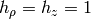 and , so is only nonzero for and 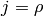 and we get:
all other Christoffel symbols are zero. For spherical coordinates we have , and , so is only nonzero for , or , or , and we get:
![\Gamma^\theta_{\theta\rho} =
\Gamma^\theta_{\rho\theta} =
{1\over h_\theta}\partial_\rho h_\theta =
{1\over \rho}\partial_\rho \rho = {1\over\rho}
\Gamma^\rho_{\theta\theta} =
-{h_\theta\over h_\rho^2}\partial_\rho h_\theta =
-{\rho \over 1^2}\partial_\rho \rho = -\rho
\Gamma^\phi_{\phi\rho} =
\Gamma^\phi_{\rho\phi} =
{1\over h_\phi}\partial_\rho h_\phi =
{1\over \rho\sin\theta}\partial_\rho (\rho\sin\theta) = {1\over\rho}
\Gamma^\rho_{\phi\phi} =
-{h_\phi\over h_\rho^2}\partial_\rho h_\phi =
-{\rho\sin\theta \over 1^2}\partial_\rho (\rho\sin\theta) =
-\rho\sin^2\theta
\Gamma^\phi_{\phi\theta} =
\Gamma^\phi_{\theta\phi} =
{1\over h_\phi}\partial_\theta h_\phi =
{1\over \rho\sin\theta}\partial_\theta (\rho\sin\theta) =
{\cos\theta\over\sin\theta}
\Gamma^\theta_{\phi\phi} =
-{h_\phi\over h_\theta^2}\partial_\theta h_\phi =
-{\rho\sin\theta \over \rho^2}\partial_\theta (\rho\sin\theta) =
-\sin\theta\cos\theta](../../_images/math/7d34cdbad552ffe85797c25d9918462b1f8254c7.png)
All other symbols are zero.
Symmetries, Killing vectors¶
We say that a diffeomorphism  is a symmetry of some tensor T if the
tensor is invariant after being pulled back under :
is a symmetry of some tensor T if the
tensor is invariant after being pulled back under :
Let the one-parameter family of symmetries be generated by a vector field , then the above equation is equivalent to:
If is the metric then the symmetry is called isometry and
is called a Killing vector field and can be calculated from:
The last equality is Killing’s equation. If is a geodesics with a tangent vector and is a Killing vector, then the quantity is conserved along the geodesics, because:
where the first term is both symmetric and antisymmetric in , thus zero, and the second term is the geodesics equation, thus also zero.
![\nabla^2\varphi
=\nabla_\mu\nabla^\mu\varphi
=\partial_\mu\nabla^\mu\varphi+\Gamma^\mu_{\mu\sigma}\nabla^\sigma\varphi
=\partial_\mu\partial^\mu\varphi+\Gamma^\mu_{\mu\sigma}\partial^\sigma\varphi
=
=\partial_\mu\partial^\mu\varphi+{1\over\sqrt{|\det
g|}}\left(\partial_\sigma\sqrt{|\det g|}\right) \partial^\sigma\varphi
=
={1\over\sqrt{|\det g|}}
\partial_\mu\left(\sqrt{|\det g|}\, \partial^\mu\varphi\right)
={1\over\sqrt{|\det g|}}
\partial_\mu\left(\sqrt{|\det g|}\, g^{\mu\sigma}\partial_\sigma\varphi\right)](../../_images/math/cdbf8591676a732197c4dab63db6f9453f7c080c.png)
Covariant integration¶
If 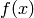 is a scalar, then the integral depends on coordinates. The correct way to integrate in any coordinates is:

where . The Gauss theorem in curvilinear coordinates is:
where is the boundary (surface) of and is the normal vector to this surface.
Examples¶
Weak Formulation of Laplace Equation¶
As an example, we write the weak formulation of the Laplace equation in arbitrary coordintes:
Now we apply per-partes (assuming the boundary integral vanishes):
For diagonal metric this evaluates to:
Cylindrical Coordinates¶
The transformation matrix is
The metric tensor of the cartesian coordinate system is , so by transformation we get the metric tensor in the cylindrical coordinates :
![g^{ij} = \mat{1 & 0 & 0\cr 0 & 1\over\rho^2 & 0\cr 0 & 0 & 1\cr}
\det g = \det g_{ij} = \rho^2
h_\rho=h_z =1
h_\phi = \rho
\Gamma^\phi_{\phi\rho} = \Gamma^\phi_{\rho\phi} =
{1\over h_\phi} \partial_\rho h_\phi = {1\over\rho}\partial_\rho \rho
= {1\over\rho}
\Gamma^\rho_{\phi\phi} =
-{h_\phi\over h_\rho^2} \partial_\rho h_\phi =
-{\rho\over 1^2}\partial_\rho \rho
= -\rho
\nabla\cdot{\bf A}=
\nabla_i A^i
={1\over h_1 h_2 h_3}\partial_i
\left(h_1 h_2 h_3 A^i \right)
={1\over \rho}\partial_i
\left(\rho A^i \right)
=
={1\over\rho}\partial_\rho(\rho A^\rho) + \partial_\theta A^\theta
+ \partial_z A^z
=\partial_\rho A^\rho + {1\over\rho}A^\rho + \partial_\theta A^\theta
+ \partial_z A^z](../../_images/math/c8ff68a6e3bb1b8765262a31388914881fea5cce.png)
As a particular example, let’s write the Laplace equation with nonconstant conductivity for axially symmetric field. The Laplace equation is:
so we use the formulas above to get:
but we know that , so and the final equation is:
To write the weak formulation for it, we need to integrate covariantly (e.g.
 in our case) and
rewrite it using per partes. We did exactly this in the previous example in a
coordinate free maner, so we just use the final formula we got there for a
diagonal metric:
in our case) and
rewrite it using per partes. We did exactly this in the previous example in a
coordinate free maner, so we just use the final formula we got there for a
diagonal metric:
and for , we get:
Spherical Coordinates¶
The transformation matrix is

The metric tensor of the cartesian coordinate system is , so by transformation we get the metric tensor in the spherical coordinates :
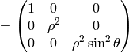
Rotating Disk¶
Let’s have a laboratory Euclidean system and a rotating disk system . The relation between the frames is
The inverse transformation can be calculated by simply inverting the matrix:
so the transformation matrices are:
The problem now is that Newtonian mechanics has a degenerated spacetime metrics (see later). Let’s pretend we have the following metrics in the system:
and
However, if we calculate with the correct special relativity metrics:
and
We get the same Christoffel symbols as with the metrics, because only the derivatives of the metrics are important. Then the only nonzero Christoffel symbols are

If we want to avoid dealing with metrics, it is possible to start with the Christoffel symbols in the system:
and then transforming them to the system using the change of variable formula:
As an example, let’s calculate the coefficients above:
So we got the same results.
Now let’s see what we have got. Later we’ll show, that the coefficients are just in the Newtonian theory. E.g. in our case we have:
from which:
and the force acting on a test particle is then:
where we have defined . This is just the centrifugal
force. Also observe, that we could have read directly from the metrics
itself — just compare it to the Lorentzian metrics (with gravitation) in the
next chapter.
The other two terms (, and the symmetric ones) don’t behave as a gravitational force, but rather only act when we are differentiating (e.g. only act on moving bodies). Below we show this is just the term (responsible for the Coriolis acceleration).
Let’s write the full equations of geodesics:
This becomes:

we can define and . Then the above equations can be rewritten as:
So we get two fictituous forces, the centrifugal force and the Coriolis force.
Now imagine a static vector in the system along the  axis, i.e.
axis, i.e.
then
In the last equality we transformed from to using the relation between frames.
Differentiating any vector in the coordinates is easy – it’s just a partial derivative (due to the Euclidean metrics). Let’s differentiate any vector in the coordinates with respect to time (since , the time is the same in both coordinate systems):
(4)
For our particular (static) vector this yields:
as expected, because it was at rest in the system. Let’s imagine a static vector in the system along the axis, i.e.
then
Similarly
How can one prove the relation:
(5)
that is used for example to derive the Coriolis acceleration etc.? We need to write it components to understand what it really means:
Comparing to the covariant derivative above, it’s clear that they are equal (provided that 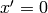 and , i.e. we are at the center of rotation).
Let’s show the derivation by Goldstein. The change in a time of a general vector as seen by an observer in the body system of axes will differ from the corresponding change as seen by an observer in the space system:
Now consider a vector fixed in the rigid body. Then and
For an arbitrary vector, the change relative to the space axes is the sum of the two effects:
A more rigorous derivation of the last equation follows from:
Let’s make the space and body instantaneously coincident at time t, then and , so we get the same equation as earlier:
Anyhow, introducing by:
we get
Linear Elasticity Equations in Cylindrical Coordinates¶
Authors: Pavel Solin & Lenka Dubcova
In this paper we derive the weak formulation of linear elasticity equations suitable for the finite element discretization of axisymmetric 3D problems.
Original equations in Cartesian coordinates¶
Let’s start with some notations: By we denote the displacement vector in
3D Cartesian coordinates, and by  the tensor of small deformations,
the tensor of small deformations,
The stress tensor  has the form
has the form
(6)
where
The symbols and  are the Lam’e constants and is the Kronecker
symbol (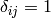 if
are the Lam’e constants and is the Kronecker
symbol (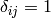 if  and otherwise).
The equilibrium equations have the form
and otherwise).
The equilibrium equations have the form
(7)
where  is the vector of internal forces (such as gravity).
is the vector of internal forces (such as gravity).
The boundary conditions for linear elasticity are given by
where are surface forces.
Weak formulation¶
Multiplying by test functions and integrating over the domain we obtain
(8)
Using Green’s theorem and the boundary conditions
Thus
(9)
Let us write the equations (9) in detail using relation (6)
(10)![\begin{eqnarray*}
\int_{\Omega} \left[\lambda \mbox{div}u + 2 \mu \frac{\partial u_1}{\partial x_1}\right] \frac{\partial v_1}{\partial x_1} + \mu \left(\frac{\partial u_1}{\partial x_2} + \frac{\partial u_2}{\partial x_1}\right)\frac{\partial v_1}{\partial x_2} + \mu \left(\frac{\partial u_1}{\partial x_3} + \frac{\partial u_3}{\partial x_1}\right)\frac{\partial v_1}{\partial x_3}
- \int_{\Gamma_2} g_1 v_1 &=& \int_{\Omega}f_1\ v_1,\nonumber\\
\int_{\Omega} \mu \left(\frac{\partial u_1}{\partial x_2} + \frac{\partial u_2}{\partial x_1}\right)\frac{\partial v_2}{\partial x_1} + \left[\lambda \mbox{div}u + 2 \mu \frac{\partial u_2}{\partial x_2}\right] \frac{\partial v_2}{\partial x_2} + \mu \left(\frac{\partial u_2}{\partial x_3} + \frac{\partial u_3}{\partial x_2}\right)\frac{\partial v_2}{\partial x_3}
- \int_{\Gamma_2} g_2 v_2 &=& \int_{\Omega}f_2\ v_2,\\
\int_{\Omega} \mu \left(\frac{\partial u_1}{\partial x_3} + \frac{\partial u_3}{\partial x_1}\right)\frac{\partial v_3}{\partial x_1} + \mu \left(\frac{\partial u_2}{\partial x_3} + \frac{\partial u_3}{\partial x_2}\right)\frac{\partial v_3}{\partial x_2} + \left[\lambda \mbox{div}u + 2 \mu \frac{\partial u_3}{\partial x_3}\right] \frac{\partial v_3}{\partial x_3}
- \int_{\Gamma_2} g_3 v_3 &=& \int_{\Omega}f_3\ v_3.\nonumber
\end{eqnarray*}](../../_images/math/0b77882aca2c10d5218be959780c7dd18ef18d8c.png)
Elementary transformation relations¶
First let us show how the partial derivatives of a scalar function are transformed
from Cartesian coordinates to cylindrical coordinates .
Note that
Since
it is
From here we obtain
(11)
The relations between displacement components in Cartesian and cylindrical coordinates are
(12)
The same relations hold for surface forces and volume forces .
Applying (11) to , we obtain
Using (12) and the fact that does not depend on , this yields
Analogously, for we calculate
For , using that it does not depend on , we have
For further reference, transform also into cylindrical coordinates
Axisymmetric formulation¶
Assuming that the domain is axisymmetric, we can begin to transform the integrals in (10) to cylindrical coordinates. Recall that the Jacobian of the transformation is . The first equation in (10) has the form:
![\begin{eqnarray*} &&\int_{\Omega} r \left[\lambda (\frac{\partial u_r}{\partial r} + \frac{1}{r} u_r + \frac{\partial u_z}{\partial z}) + 2 \mu (\frac{\partial u_r}{\partial r}\cos^2\phi + \frac{1}{r} u_r\sin^2\phi)\right] (\frac{\partial v_r}{\partial r}\cos^2\phi + \frac{1}{r} v_r\sin^2\phi) + \\ &&r 2 \mu \left(\frac{\partial u_r}{\partial r}\cos\phi\sin\phi - \frac{1}{r}u_r \cos\phi\sin\phi\right)\left(\frac{\partial v_r}{\partial r}\cos\phi\sin\phi - \frac{1}{r}v_r \cos\phi\sin\phi\right) + \\ &&r \mu \left(\frac{\partial u_r}{\partial z}\cos\phi + \frac{\partial u_z}{\partial r}\cos\phi\right)\frac{\partial v_r}{\partial z}\cos\phi - \int_{\Gamma_2} r g_r v_r {\cos}^2 \phi = \int_{\Omega} r f_r\ v_r \cos^2 \phi, \end{eqnarray*}](../../_images/math/8f4c3c83c1f58a88675c241860d639c4ea5bacc7.png)
The second equation in (10) has the form:
![\begin{eqnarray*} &&\int_{\Omega} r 2\mu \left(\frac{\partial u_r}{\partial r}\cos\phi\sin\phi - \frac{1}{r}u_r \cos\phi\sin\phi\right)\left(\frac{\partial v_r}{\partial r}\cos\phi\sin\phi - \frac{1}{r}v_r \cos\phi\sin\phi\right) +\\ && r \left[\lambda (\frac{\partial u_r}{\partial r} + \frac{1}{r} u_r + \frac{\partial u_z}{\partial z}) + 2 \mu (\frac{\partial u_r}{\partial r}\sin^2\phi + \frac{1}{r} u_r\cos^2\phi)\right] (\frac{\partial v_r}{\partial r}\sin^2\phi + \frac{1}{r} v_r\cos^2\phi) + \\ && r \mu \left(\frac{\partial u_r}{\partial z}\sin\phi + \frac{\partial u_z}{\partial r}\sin\phi\right)(\frac{\partial v_r}{\partial z}\sin\phi) - \int_{\Gamma_2}r g_r v_r \sin^2 \phi = \int_{\Omega}r f_r\ v_r \sin^2 \phi,\\ \end{eqnarray*}](../../_images/math/429554da8cce51abf005b30717dcf453d97049eb.png)
Adding these two equations together we get
![\begin{eqnarray*} &&\int_{\Omega} r \lambda (\frac{\partial u_r}{\partial r} + \frac{1}{r} u_r + \frac{\partial u_z}{\partial z}) (\frac{\partial v_r}{\partial r} + \frac{1}{r} v_r) + \\ &&\int_{\Omega} r \mu \left[ 2 \left(\frac{\partial u_r}{\partial r}\frac{\partial v_r}{\partial r}\cos^4\phi + \frac{1}{r} u_r \frac{\partial v_r}{\partial r}\sin^2 \phi \cos^2 \phi + \frac{1}{r}\frac{\partial u_r}{\partial r} v_r\sin^2 \phi \cos^2 \phi + \frac{1}{r^2} u_r v_r\sin^4\phi\right) +\right.\\ &&\qquad\ \left.2 \left(\frac{\partial u_r}{\partial r}\frac{\partial v_r}{\partial r}\sin^4\phi + \frac{1}{r} u_r \frac{\partial v_r}{\partial r}\sin^2 \phi \cos^2 \phi + \frac{1}{r}\frac{\partial u_r}{\partial r} v_r\sin^2 \phi \cos^2 \phi + \frac{1}{r^2} u_r v_r\cos^4\phi\right) + \right. \\ && \left. 4 \left( \frac{\partial u_r}{\partial r}\frac{\partial v_r}{\partial r}\cos^2\phi\sin^2\phi - \frac{1}{r}u_r\frac{\partial v_r}{\partial r} \cos^2\phi\sin^2\phi - \frac{1}{r} \frac{\partial u_r}{\partial r} v_r \cos^2\phi\sin^2\phi + \frac{1}{r^2}u_r v_r \cos^2\phi\sin^2\phi\right)\right. + \\ && \left. \left(\frac{\partial u_r}{\partial z}\frac{\partial v_r}{\partial z} + \frac{\partial u_z}{\partial r}\frac{\partial v_r}{\partial z}\right)\right] - \int_{\Gamma_2} g_r v_r r= \int_{\Omega}f_r\ v_r r \end{eqnarray*}](../../_images/math/891bfd06b0634a09706c062f4db3e61b77b6f7af.png)
This can be simplified to
Finally, the third equation in (10) has the form
![\begin{eqnarray*} && \int_{\Omega} r \mu \left(\frac{\partial u_r}{\partial z}\cos\phi + \frac{\partial u_z}{\partial r}\cos\phi\right)\frac{\partial v_z}{\partial r}\cos\phi + r \mu \left(\frac{\partial u_r}{\partial z}\sin\phi + \frac{\partial u_z}{\partial r}\sin\phi\right)\frac{\partial v_z}{\partial r}\sin\phi + \\ && r \left[\lambda (\frac{\partial u_r}{\partial r} + \frac{1}{r} u_r + \frac{\partial u_z}{\partial z} ) + 2 \mu \frac{\partial u_z}{\partial z}\right] \frac{\partial v_z}{\partial z} - \int_{\Gamma_2} g_z v_z r = \int_{\Omega}f_z\ v_z r. \end{eqnarray*}](../../_images/math/2dfe4705fb5a690fc4ad1699b8d852df0b4bc777.png)
This gives us
Since the integrands do not depend on , we can simplify this to integral over , where is the intersection of the domain with the half-plane. Dividing both equations by 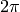 we get

Coordinate Independent Way¶
Let’s write the elasticity equations in the cartesian coordinates again:
Those only work in the cartesian coordinates, so we first write them in a coordinate independent way:

so:
The weak formulation is then (do not sum over ):
We apply the integration by parts:
This is the weak formulation valid in any coordinates. Using the cylindrical coordinates (see above) we get:
![{\bf x} = (\rho, \phi, z)
\d^3 x = \d\rho\, \d \phi\, \d z
g^{ij} = \mat{1 & 0 & 0\cr 0 & 1\over\rho^2 & 0\cr 0 & 0 & 1\cr}
\sqrt{|g|} = \sqrt{|\det g_{ij}|} = \rho
\nabla_k u^k = {1\over\sqrt{|g|}}\partial_k (\sqrt{|g|} u^k) =
{1\over\rho}\partial_k (\rho u^k) =
= {1\over\rho} u^\rho + \partial_\rho u^\rho + \partial_\phi u^\phi +
\partial_z u^z
(\nabla^j u^z + \nabla^z u^j) \nabla_j v^z =
(g^{jk}\nabla_k u^z + g^{zk}\nabla_k u^j) \nabla_j v^z =
(\partial_\rho u^z + \partial_z u^\rho) \partial_\rho v^z +
(\partial_z u^z + \partial_z u^z) \partial_z v^z
=
= (\partial_\rho u^z + \partial_z u^\rho) \partial_\rho v^z +
2\partial_z u^z \partial_z v^z
g^{\rho j}\nabla_j v^\rho = g^{\rho\rho}\nabla_\rho v^\rho =
\partial_\rho v^\rho + \Gamma^\rho_{k\rho} v^k =
\partial_\rho v^\rho + {1\over\rho} v^\phi
g^{\phi j}\nabla_j v^\phi = g^{\phi\phi}\nabla_\phi v^\phi =
{1\over\rho^2}(\partial_\phi v^\phi + \Gamma^\phi_{k\phi} v^k )=
{1\over\rho^2}(\partial_\phi v^\phi + {1\over\rho} v^\rho )=
g^{zj}\nabla_j v^z = g^{zz}\nabla_z v^z =
\partial_z v^z + \Gamma^z_{kz} v^k = \partial_z v^z
\int \left( \lambda g^{ij}\left(
{1\over\rho} u^\rho + \partial_\rho u^\rho + \partial_\phi u^\phi +
\partial_z u^z
\right) + \mu
(\nabla^j u^i + \nabla^i u^j) \right) \nabla_j v^i
\rho \,\d\rho\, \d \phi\, \d z
= \int f^i v^i \rho \,\d\rho\, \d \phi\, \d z](../../_images/math/97dd67d79f0169eb3be3f9eb1da932fdc587512e.png)
for we get:
![\int \lambda \left(
{1\over\rho} u^\rho + \partial_\rho u^\rho + \partial_\phi u^\phi +
\partial_z u^z
\right)\left(\partial_\rho v^\rho + {1\over\rho} v^\phi\right)\rho + \mu
\left(2\partial_\rho u^\rho \partial_\rho v^\rho +
(\partial_z u^\rho +\partial_\rho u^z)\partial_z v^\rho\right)
\rho \,\d\rho\, \d \phi\, \d z
= \int f^\rho v^\rho \rho \,\d\rho\, \d \phi\, \d z
\int \lambda \left(
{1\over\rho} u^\rho + \partial_\rho u^\rho + \partial_\phi u^\phi +
\partial_z u^z
\right){1\over\rho^2}\left(\partial_\phi v^\phi + {1\over\rho} v^\rho \right)\rho + \mu
\left(2\partial_\rho u^\rho \partial_\rho v^\rho +
(\partial_z u^\rho +\partial_\rho u^z)\partial_z v^\rho\right)
\rho \,\d\rho\, \d \phi\, \d z
= \int f^\phi v^\phi \rho \,\d\rho\, \d \phi\, \d z
\int \lambda \left(
{1\over\rho} u^\rho + \partial_\rho u^\rho + \partial_\phi u^\phi +
\partial_z u^z
\right)\partial_z v^z\rho + \mu
\left((\partial_\rho u^z + \partial_z u^\rho) \partial_\rho v^z +
2\partial_z u^z \partial_z v^z\right)
\rho \,\d\rho\, \d \phi\, \d z
= \int f^z v^z \rho \,\d\rho\, \d \phi\, \d z](../../_images/math/f6279b319c12c161e2b821a8c1dcf99e4e0ddd8a.png)